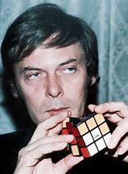

El cubo de Rubik toma su nombre de su creador, el escultor, diseñador y profesor de arquitectura
húngaro Ernő Rubik, nacido el 13 de julio de 1944. En 1974, Rubik patentó su creación en
Hungría y en 1977 se comenzó a comercializar en el país. Apenas un par de años más tarde,
la compañía de juguetes Ideal logró un acuerdo para poder vender el cubo a nivel mundial,
y rápidamente se convirtió en un éxito, logrando hacerse en 1980 con el premio alemán al
Mejor Juego del Año en la categoría de mejor rompecabezas.
A pesar de la enorme popularidad lograda, originalmente Ernő Rubik no quería crear un
rompecabezas, sino que estaba investigando el problema estructural de cómo se podían mover
los bloques de forma independiente sin que se desmontara el cubo. Según declaró en un
artículo publicado en 1987 en Discover, la idea del rompecabezas de colores surgió cuando
estaba girando los cubos en una de sus pruebas y vio cómo se reorganizaban cada vez de forma
distinta.
Nuestra historia comienza en febrero de 1963 cuando un estadounidense llamado William
Gustafson patentó su rompecabezas un juguete manipulable que era muy similar 2x2 esférico las piezas de este juguete se
desplazaban alrededor de un núcleo y aunque no tuvo una producción exitosa se considera como
el primer antepasado del cubo de Rubik.
Años después en abril 1970 un inventor británico llamados Frank Fox pidió patentar su
creación una esfera 3x3 cuyas piezas podrían desplazarse entre sí para jugar a gato. 3 en raya o tic
tac toe y aunque tampoco fue comercializado es curioso que su mecanismo fuera tan similar al
futuro cubo 3x3.
En abril de 1972 tendríamos la propuesta del estadounidense Larry Nichols
un conjunto de 8 cubos que formaban un 2x2 estás piezas individuales podían
moverse entre sí gracias a un sistema de imanes y aunque el mecanismo era muy diferente, el concepto del cubo de Rubik
ya iba siendo mucho mas claro.
Porque finalmente el 19 de mayo de 1974 el profesor de arquitectura húngaro Ernő Rubik crearía por accidente el cubo que todos conocemos, todo esto sucedió porque él estaba fabricando un artefacto para sus alumnos cuyas piezas pudieron mostrar cómo se comportan los objetos tridimensionales alrededor de un núcleo. En pocas palabras este invento para una clase escolar se convertiría en todo un legado de rompecabezas.El artefacto ganaría mucha popularidad pues ni siquiera el propio Ernő Rubik pudo arreglar las piezas después de un par de giros y al darse cuenta que inconscientemente creo un rompecabezas decidió patentar la idea y presentar un segundo prototipo pero esta vez hecho de madera para un giro más suave y con las esquinas cortadas para darle un acabado más amistoso.
Después de negociar el cubo tal y como lo conocemos comenzaría a venderse en 1977 bajo el nombre
de "Hungarian Magig Cube" recibio este nombre porque solo era fabricado en Hungría por una
empresa llamada "politoys2 estos primeros ejemplares estaban fabricados en plástico ya tenían
un color diferente por cada cara y su empaque era una simple caja de color azul.
Sin embargo el cubo sería famoso mundialmente hasta 1980 y finalmente bajo el nombre de
Rubik´s Cube está fabricación y estreno internacional fue gracias a otra compañía llamada "ideal toys"
aunque su diseño era prácticamente el mismo que la versión húngara con la diferencia de que
los stickers amarillos y azules podían venir en otras caras diferentes, además de venir en
mu las presentaciones desde cajas sencillas cajas voluminosas hasta la famosa edición del
cilindro de plástico.